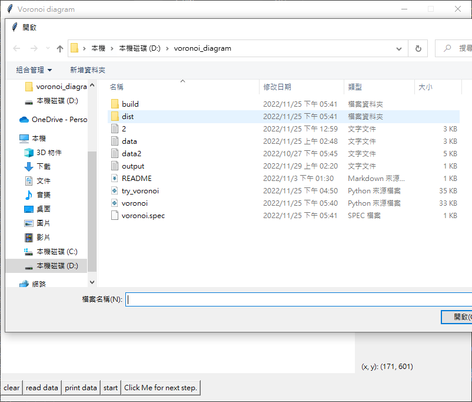
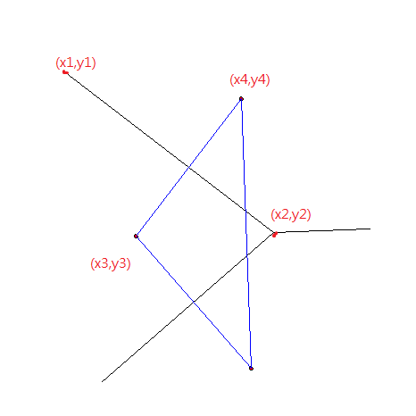

軟體規格書
功能規格與介面規格
主介面

畫布
- 600x600
- (x,y)：鼠標的座標
按鈕
- Clear：清空畫布
- Read data：讀取資料點檔案並匯入
- Print data：印出讀到的資料點
- Start：直接印出Voronoi diagram
- Click me for next step：一步一步繪製結果
輸出與輸入（資料）規格
輸入
[方法一]滑鼠在畫布上任意點擊
- 直接在畫布上點選
- 按Start印出Voronoi diagram
- 按Click me for next step，一步一步繪製結果
- 印出的點、線存入output.txt，且以lexical order順序排列
[方法二]讀取檔案
- 點擊read data
- 選擇要輸入的檔案
- 點擊print data，印出檔案內的點
- 按Start印出Voronoi diagram
- 按Click me for next step，一步一步繪製結果
- 印出的點、線存入output.txt，且以lexical order順序排列
檔案格式範例
=========================[輸入、輸出]=========================
P 100 100P 100 200
P 200 100
P 200 200
E 0 150 150 150
E 150 0 150 150
E 150 150 150 600
E 150 150 600 150
===================[輸入，可有#、空格、換行]===================
#五點測試 隨意五點5
123 456
213 478
11 590
234 77
99 68
#五點測試 隨意五點
5
123 456
456 123
1 1
120 459
400 100
#五點測試 隨意五點
5
567 234
79 34
34 90
432 453
77 111
#=======================================================
軟體測試規劃書
- 1~3點：直接解
- 4~6點：Divide及Merge一次
- 7點以上：Divide及Merge多次
軟體說明
點擊voronoi.exe，開啟執行檔
點擊read data，讀取檔案
點擊print data，繪製點

點擊Click me for next step，繪製下一步

點擊Start，直接繪製完成

點擊clear，清空畫布
程式設計
資料結構
點
dot = [(x1,y1),(x2,y2),...] #(x1,y1)為一個點邊
edge = [(x1,y1,x2,y2,x3,y3,x4,y4),...] #(x1,y1)和(x2,y2)形成一個Voronoi diagram的邊，(x3,y3)和(x4,y4)為該Convex hull的邊，並用lexical order排序 Convex hull
dot = [(x1,y1),(x2,y2),...] #最左邊點(x1,y1)開始，以順時針方向排序的點小細節
兩點解法
需考慮是否為垂直、水平、是否為同一點，並將各種case列出
三點解法
需考慮三角形為銳角、鈍角、直角、外心在三角形內或外、線要往內或往外畫、是否三點共線、是否點在同一點上，將各種case列出
三點以上解法
先將點divide，各自畫出Voronoi diagram後，再combine
外心
需考慮是否三點共線，若是則沒有外心
畫布的起始點
需注意畫布左上為(0,0)，向右x增加，向下y增加，並不是左下為(0,0)，因此考慮順時針轉、逆時針轉、外積、畫線方向時須注意
Voronoi diagram的邊
除了Voronoi diagram的邊，畫該中垂線的兩點也需記住，在merge時要用
Hyperplane畫線
計算交點時要考慮是否真的有交到
Hyperplane消線
消完一條線要考慮該線是否還有與其他線相交、是否要繼續沿著該線消
多點畫Voronoi diagram流程
- 將全部點divide成兩點或三點
- 將左、右半邊各自畫Convex hull、Voronoi diagram
- 將左右兩邊Convex hull合成一個大Convex hull
- 從大Convex hull的上切線開始畫中垂線，直到碰到Voronoi diagram的線
- 從碰到Vovonoi diagram的點開始，沿著另外兩點(畫中垂線的兩點、畫出碰到的Voronoi diagram的兩點，這兩個點集沒有重複的兩點)畫中垂線
- 畫到碰到Convex hull下切線為止
- 從第一個碰到的點開始，消掉和下一個點的旋轉方向同方向的Voronoi diagram
- 直到全部merge完
軟體測試與實驗結果
經過測試，6點以下大部分可正常運行，但7點以上常會有錯誤，估計是divide and conquer部分尚未完工導致
測試環境
- 處理器 Intel(R) Core(TM) i7-8700 CPU @ 3.20GHz 3.19 GHz
- 已安裝記憶體(RAM) 24.0 GB (23.8 GB 可用)
- 顯示卡 NVIDIA GeForce GTX 1050
- 系統版本 Windows 10 專業版
- 編輯器 Visual Studio Code
- 使用語言 Python3
Step by step運行結果
結論與心得
前置作業
在老師上課教到之前，其實根本沒有聽過Voronoi diagram，所以一開始也是完全毫無頭緒。因此做這個作業的第一步就是要先搞懂Voronoi diagram的資料結構。一開始花了相當多時間在了解Voronoi diagram的運作原理、convex hull的演算法、以及各式各樣畫線的方程式。
最後在和研究式的同學討論，以及參考網路上推薦的做法後，決定使用python來實作。
期中進度
經過一段時間終於開始畫兩條線及三條線之後，發現bug比想像中來的多很多，原本想說畫兩、三條線而已應該滿快就處理完，但開始做之後才發現有各種不同case需要去考慮，因此到期中評測前的最後一刻都還在努力的處理各種case。
期末進度
由於前面畫線是考慮各種case就直接畫出，當要畫3點以上時才發現前面有許多要記下來的東西，因此花了一些時間修改了前面的資料結構。
在畫hyperplane前一直沒有頭緒，直到修改資料結構，把該記的點和線記住後，才發現之前很難判斷的原因是因為之前的資訊不足導致的。